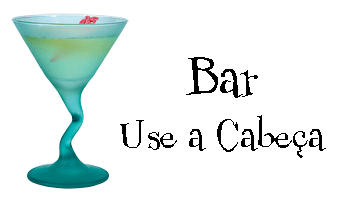

O Bar Use a Cabeça é, sem dúvida, o maior lançador de tendências de Weblândia. Venha experimentar a eclética oferta de elixires, chás e cafés ou fique um pouco mais e aproveite o cardápio multicultural que combina uma harmonia de sabores, texturas e cores com os melhores ingredientes frescos e saudáveis.
Durante sua permanência no bar, você apreciará uma suave mistura de sons ambientes e místicos, que preenchem o bar e adicionam uma dimensão extra à experiência da refeição aqui. A decoração envolve você em sentimentos relaxantes de suspiros de eras passadas. E, não se esqueça, o bar oferece acesso wireless grátis à Internet, logo traga seu laptop.
Nossa garantia: no bar, temos o compromisso de oferecer a você, nosso convidado, uma experiência excepcional em todas as suas visitas. Esteja aqui para verificar seus e-mails enquanto toma seu elixir ou para um jantar diferente, você descobrirá que nosso pessoal presta atenção a todos os detalhes. Se não estiver totalmente satisfeito, tome um Elixir da Felicidade por nossa conta.
Mas isso não é tudo; à noite, junte-se a nós em nosso salão dos fundos para curtir nosso DJ tocando uma grande seleção de trance e de drum&bass na pista de dança espaçosa e com temas polinésios. Ou dê apenas uma passada em uma de nossas confortáveis cabines brancas de vinil no bar da danceteria. Nossos elixires virão do salão principal até você, na pista de dança. Quando cansar da balada, volte para a área principal do bar para relaxar. E, esteja você onde estiver em nosso bar, sempre estará conectado a nosso acesso wireless à Internet.
Agora que você já experimentou o bar virtualmente, é hora de cair na real. Você nos encontrará bem no centro da cidade de Weblândia. Temos instruções detalhadas para você chegar aqui em tempo recorde. Não é necessário fazer reserva, junte-se a nós a qualquer hora.
O drink saudável perfeito, este elixir combina ervas, minerais e vitaminas com um toque de limão em uma maravilha cítrica e suave, que manterá seu sistema imunológico perfeito dia e noite.

Não é nosso chá tradicional, mas esse elixir mistura mate com temperos chai e junta uma pitada de chocolate extra para um sabor de cafeína no gelo.

Quer turbinar seu cérebro? Experimente nosso elixir Bebida Negra do Cérebro, feita com chá de oolong negro e apenas um toque de expresso. Seu cérebro agradecerá a turbinada.
Junte-se a nós todas as noites para experimentar esses e outros maravilhosos elixires.
Com frequência nos perguntam que músicas tocamos no bar, e não se surpreenda, é coisa muito boa. Colocamos uma lista no site que é atualizada semanalmente. Aproveite.
© 2005, Bar Use a Cabeça
Todas as marcas e marcas registradas que aparecem neste site pertencem aos respectivos proprietários.